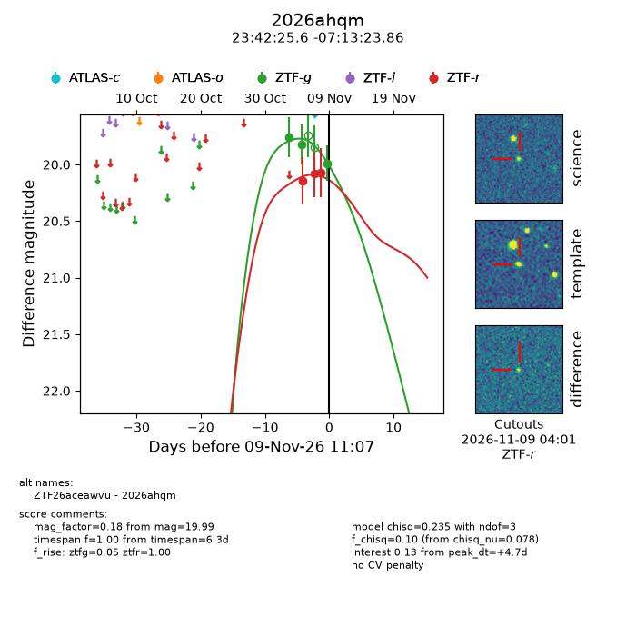
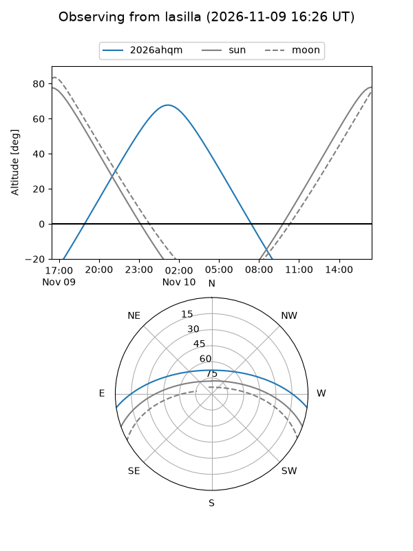
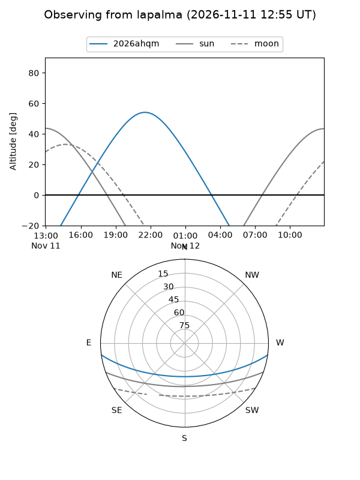
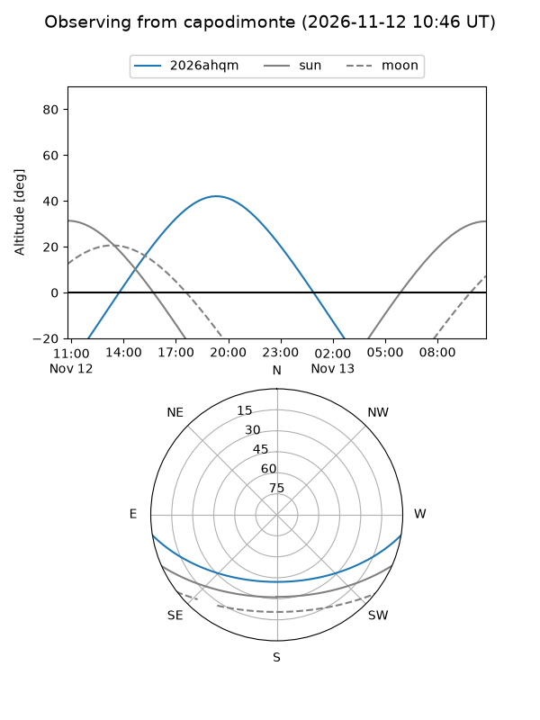
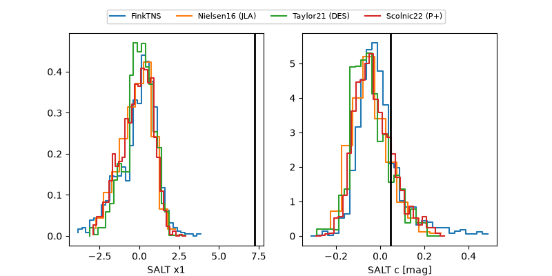

2026ahqm
Target 2026ahqm at 2026-11-09 11:10
Aliases and brokers:
FINK-ZTF: ztf.fink-portal.org/ZTF26aceawvu
Lasair-ZTF: lasair-ztf.lsst.ac.uk/objects/ZTF26aceawvu
ALeRCE-ZTF: alerce.online/object/ZTF26aceawvu
YSE-PZ: ziggy.ucolick.org/yse/transient_detail/2026ahqm
TNS name: wis-tns.org/object/2026ahqm
Direct TNS query: direct search
alt names
ZTF26aceawvu (ztf,fink_ztf)
2026ahqm (tns,yse)
Coordinates:
equatorial (ra, dec) = 355.6067,-7.22329
equatorial (HMS+DMS) = 23:42:25.62,-07:13:23.86
galactic (l, b) = (80.3436,-64.22810)
Flags:
peak dt: +4.7
Photometry:
last ztfg=19.99, ztfr=20.07
3 ztfg, 3 ztfr detections
Lightcurve

Visibility



Additional plots
